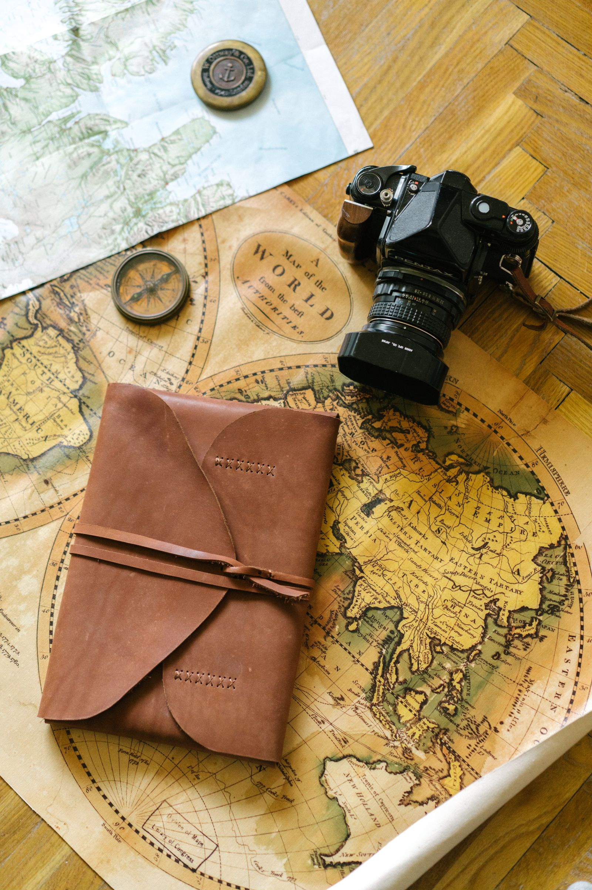
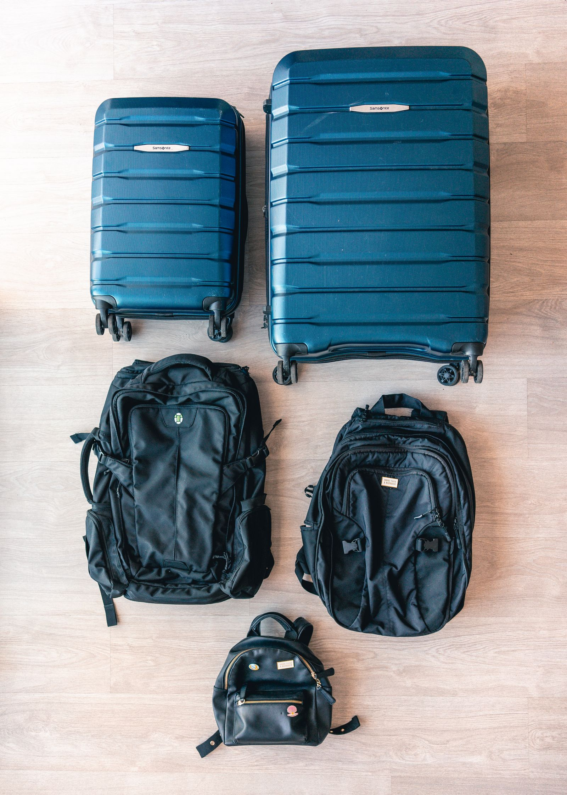
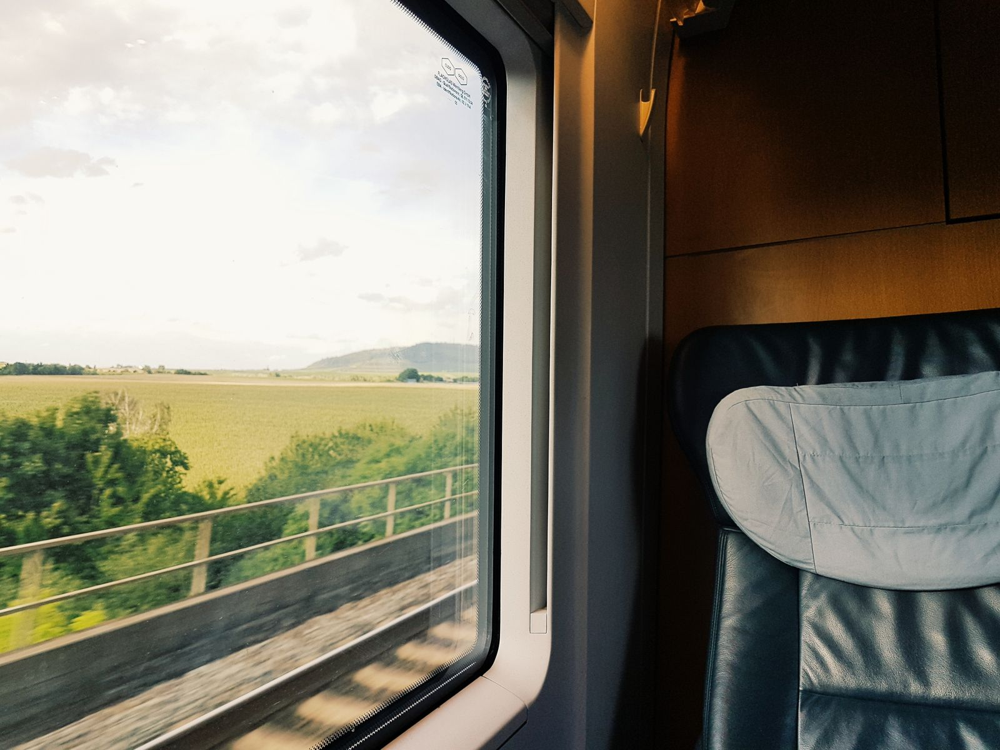
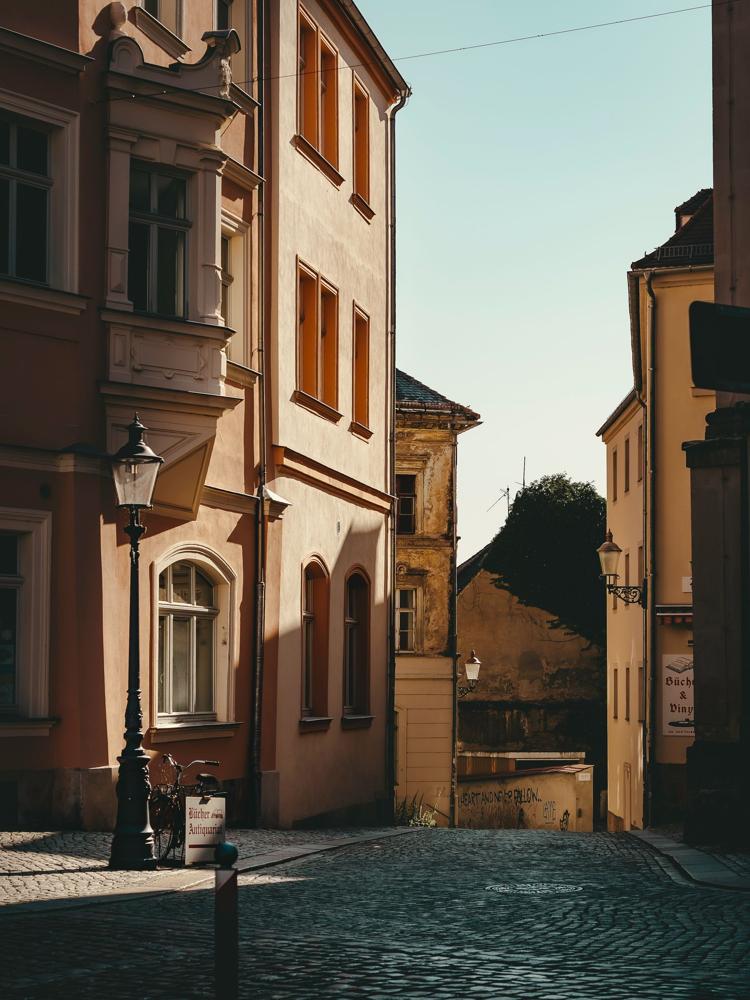
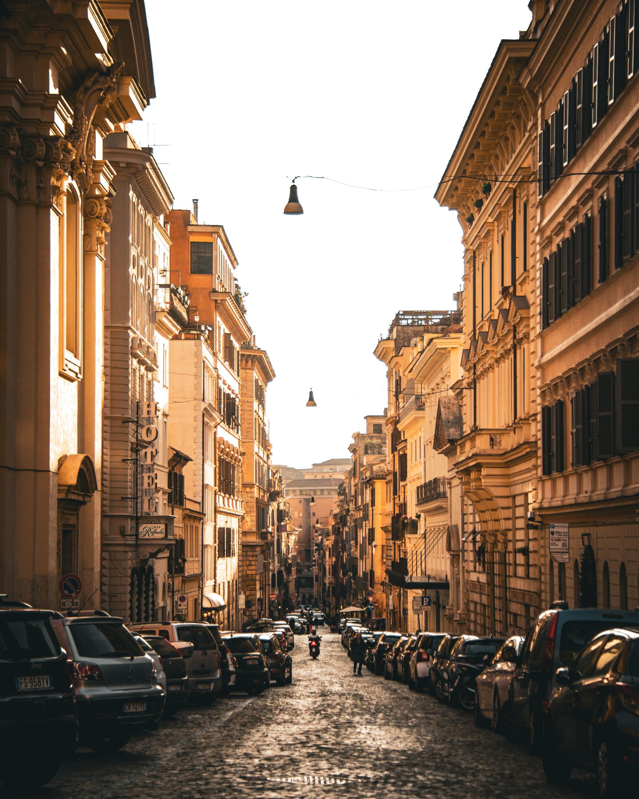

No somos un buscador. Somos dos personas en un local de la Xunqueira que preparan seis salidas propias al año, acompañan algunas y montan el resto de los viajes uno a uno, hablando.
Los sellos se estampan al entrar. En el pasaporte de verdad los pone otro.
precio cerrado por escrito✳grupos de diez a catorce✳teléfono 24 h durante el viaje✳sin vuelos sueltos✳la primera charla no se cobra✳
01 Los viajes
Seis salidas con sello, una por temporada
Son nuestras: las montamos, las probamos antes y, en cuatro de ellas, viaja alguien de la agencia. Las plazas son pocas porque el viaje cambia mucho si sois treinta.
São Miguel, Azores
Ocho días en coche por la isla, con dos noches en el noreste, que es donde nadie va. Caldeiras, lagos y comida de tasca.
Días
8
Salida
14 de mayo
Plazas
12
Desde
1.290 €
Incluye vuelo desde Santiago, coche, siete noches, dos cenas y seguro. No incluye el resto de comidas.
Camino Francés desde Sarria
Seis días andando hasta Santiago, con la mochila transportada y las etapas cortas de verdad, no de folleto.
Días
6
Salidas
Abril a octubre
Grupo
10
Desde
690 €
Incluye cinco noches, desayunos, transporte de mochila y traslado de vuelta. No incluye las cenas.
Fiordos noruegos, en tren y barco
Nueve días sin coger un avión dentro del país: tren de Oslo a Bergen, el Flåm y dos travesías largas en barco.
Días
9
Salida
3 de julio
Plazas
14
Desde
2.150 €
Incluye vuelos, todos los trenes y barcos, ocho noches y acompañante de la agencia.
Valle del Draa, Marruecos
Diez días de Marrakech al sur, con dos noches en casa de familia y una en el desierto. Se viaja en furgoneta, despacio.
Días
10
Salida
2 de octubre
Plazas
12
Desde
1.480 €
Incluye vuelos, transporte, nueve noches, guía local y todas las comidas menos cuatro.
Tierras Altas de Escocia, en coche
Siete días a tu aire con la ruta montada: alojamientos reservados, coche, y un cuaderno con lo que merece la pena y lo que no.
Días
7
Cuándo
Todo el año
Grupo
A medida
Desde
1.050 €
Incluye vuelos, coche, seis noches y el cuaderno de ruta. No hay guía ni grupo: vais vosotros.
Santo Antão, Cabo Verde
Nueve días de senderismo por los valles del norte, durmiendo en casas pequeñas y comiendo lo que haya. Hay cuestas de verdad.
Días
9
Salida
20 de noviembre
Plazas
10
Desde
1.620 €
Incluye vuelos, ferry, ocho noches, guía local de la isla y media pensión.
Precios de muestra para esta demostración, por persona en habitación doble y sin tasas variables. En una agencia real, cada ficha llevaría también las condiciones de cancelación y el seguro contratado.
02 A medida
Cuatro pasos y una propuesta en setenta y dos horas
La charlaCuarenta minutos en el local o por teléfono. Queremos saber con quién viajáis, cuánto queréis andar y qué presupuesto hay. No se cobra y no compromete a nada.
La propuestaEn setenta y dos horas os mandamos dos o tres opciones con el precio cerrado, lo que incluye y lo que no. En papel, para que se pueda comparar.
La reservaSe confirma con el 25 % y el resto treinta días antes de salir. Todo lo que se reserva queda a vuestro nombre, no al nuestro.
El viajeOs vais con un teléfono que contesta veinticuatro horas, con el horario español. Si algo se tuerce, lo arreglamos desde aquí.

Foto de archivo: así se prepara una propuesta, más o menos.
03 Lo que no hacemos
Hay cosas que se hacen mejor sin nosotros
Vuelos sueltos al mejor precio. Para eso están los buscadores, y lo van a hacer mejor y más barato. Si el viaje es solo un vuelo, no nos llames.
Cruceros. No los conocemos y no nos gusta vender lo que no conocemos.
Catorce países en diez días. Lo montamos si insistís, pero primero os vamos a intentar convencer de lo contrario.
Proveedores que no hemos pisado. Cada hotel y cada guía de estos seis viajes los conoce alguien de la agencia por su nombre.
Cobrar la primera charla. Ni la segunda. Se cobra cuando hay viaje.
Foto de archivo.
04 La agencia
Dos personas, un local y diecisiete años
Abrimos en 2008 en la Xunqueira, al lado del mercado. Somos Carme Arroaz, que monta los itinerarios, y Brais Otero, que lleva la contratación y acompaña las salidas largas. No hay más plantilla ni falta que hace.
Trabajamos sobre todo con gente de la comarca, que vuelve. Eso obliga a no vender humo: aquí te cruzas con tus clientes en la plaza el sábado siguiente.
Licencia de agencia de viajes
Una agencia real tiene que publicar su número de licencia (en Galicia, el código XG-…), su seguro de responsabilidad civil y su garantía frente a insolvencia. Esta demostración no inventa ninguno: al reskinear la plantilla hay que poner los del cliente aquí y en el aviso legal.
Del cuaderno del mostrador
Notas de muestra, escritas para esta demostración. No proceden de ninguna plataforma ni de ninguna persona real.
«Nos cambiaron un vuelo cancelado un domingo a las siete de la mañana. Ni nos enteramos hasta que llegamos al aeropuerto y estaba resuelto.»
«Nos dijeron que el viaje que queríamos no nos iba a gustar y nos propusieron otro. Tenían razón.»

Foto de archivo: el equipaje que cabe, que es menos del que crees.

Foto de archivo.
05 Contacto
Se viene al local, se llama o se escribe
Para una propuesta a medida preferimos la cita: cuarenta minutos sin que suene el teléfono. Se pide por cualquiera de estas vías y no cuesta nada.
LocalRúa da Xunqueira Vella, 8 · 27850 Viveiro (Lugo)
HorarioLunes a viernes 10:00–14:00 · lunes a jueves 17:00–20:00
EstadoComprobando el horario…
En verano, de julio a septiembre, cerramos por las tardes. El teléfono de emergencias para quien está de viaje funciona igual los 365 días.

Foto de archivo.
El mapa lo carga Google y pone cookies suyas. Solo aparece si lo pides tú.

Foto de archivo.
Sobre las cookies
Esta web no usa cookies de seguimiento ni analítica. Solo guardamos en tu navegador que ya has visto este aviso. El mapa de Google únicamente se carga si pulsas el botón.